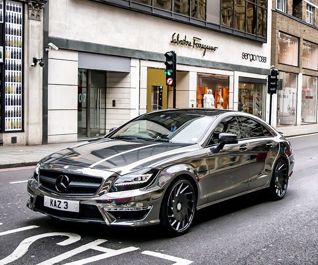
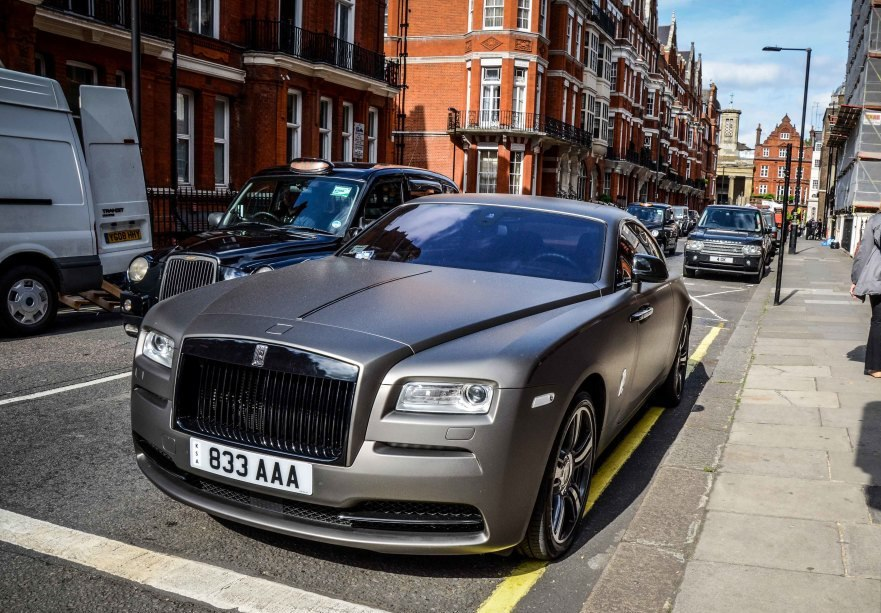
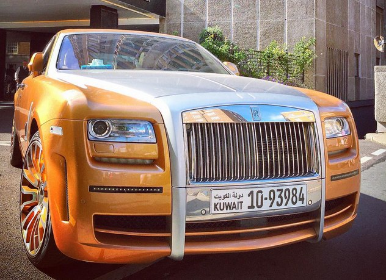

Огромное влияние на предпочтения при выборе личного транспортного средства оказывает профессия человека, его социальное окружение, возраст, семейное положение. Для тех людей, которые еще не созрели для покупки собственного футбольного клуба или острова в океане, престижный автомобиль — одна из возможностей самоутвердиться и продемонстрировать свой статус.А вот творческие натуры преследуют иные цели, они не видят себя в авто «как из магазина» — им просто необходим нестандартный тюнинг, необычные цветовые сочетания, эффектные номера, редкие марки, словом все то, что говорит: «Я — личность. Я — не такой как все!» К сожалению, «упадническое» настроение и потеря интереса к жизни автовладельца, тоже видны «за версту». Вряд ли такой человек когда-нибудь сядет за руль нового автомобиля. У него «не хуже, чем у многих», но серо, уныло и довольно неухожено. «Машина — это всего лишь средство передвижения!» — логичный, но очень избитый слоган подобных людей.  Психологи научились определять безошибочно, какой автомобиль подходит к каждому из психотипов людей. Автомобили выбирают не случайно: цвет, форма, размер и даже марка машины полностью соответствуют темпераменту человека. Уроки психоанализа на дорогах Многие автомобилисты даже и не догадываются, что их машина может поведать окружающим такое, в чем они бояться признаться самим себе. Если бы они это знали, наверное, покупали бы другие авто, чтобы не раскрывать свои карты. В потоке машин можно всегда найти интересные «говорящие» экземпляры.
При выборе автомобиля мы в первую очередь ориентируемся на его стоимость, технические характеристики, внешний вид. Однако, не мало важным является психологический аспект выбора. Ведь есть своеобразные стереотипы. Например, за рулем небольшой красной машины и за рулем старой «шестерки» в среднем водители совершенно разные и отношение к ним на дороге тоже разное. Будучи за рулем учебного автомобиля наверняка многие к вам относились агрессивно: пытались обогнать, объехать подальше, ведь за рулем новичок и непонятно что от него ожидать.  Представьте себя на месте водителя. Например, вы взрослый, солидный мужчина вдруг оказались за рулем маленькой, типично женской, машины. Как бы вы ни ездили – отношение со стороны окружающих в первую очередь будет соответствующее автомобилю, а не водителю. Как говорится, «встречают по одежке». И наоборот, будучи за рулем дорогой, солидной машины, окружающие будут относиться к вам более уважительно, пусть даже при этом вы не профессиональный водитель. Понятно, что тут на первый план выходит стоимость, но тем не менее даже среди одной ценовой категории есть из чего выбрать. Вот взять хотя бы цвет. Цвет тоже отражает характер владельца. Например, на счет черного цвета есть две точки зрения: с одной стороны черный выбирают солидные, уверенные в себе люди, а с другой стороны неуверенные в себе, пессимистичные люди. Красные цвет в основном выбирают страстные и вспыльчивые люди. Белый цвет нейтральный и его выбирают люди с различными характерами. Владельцы зеленых автомобилей реалисты, они более спокойны. Синий цвет выбирают скромные и сдержанные люди. Казалось бы ерунда всё это, но однажды мне пришлось почувствовать разницу на собственном опыте. Как-то в течение месяца мне довелось побывать за рулем трех различных автомобилей: розовый Витц с наклейкой «У», белый Mark II и черная раздолбанная Honda. Разница оказалась очень существенной. Сначала я была за рулем маленького розового Витца с наклейкой «У». Многие считали своим долгом меня обогнать, подрезать, помахать мне рукой из соседней машины. Потом я села за руль Mark II. Отношение стало гораздо более уважительным при том, что я за рулем чувствовала себя менее уверенно, потому что не привыкла к этой машине. И вот, наконец, Honda. Водители большинства хонд известны как «гонщики». Машина более спортивного типа. Многие на перекрестке пытались посоревноваться со мной: кто кого «сделает» на старте. Большинство не ожидали увидеть за рулем девушку. Так что при выборе стоит учесть на сколько близок вам по духу тот или иной автомобиль.
Компания Rolls-Royce Limited была основана в 1906 году Генри Ройсом и Чарльзом Роллсом. Она выпустила первый авиационный двигатель в 1914 году. Во время Первой мировой войны около половины двигателей самолетов Антанты было произведено Rolls-Royce. К концу 1920-х годов производство авиадвигателей стало основной деятельностью компании Rolls-Royce.Последним двигателем, созданным Генри Ройсом, стал легендарный двигатель Мерлин, который стал использоваться лишь с 1935 года, в то время, как сам Генри Ройс умер в 1933 году. Мерлин был развитием двигателей серии R, которым был оснащен рекордный гидроплан Supermarine S.6B развивший 655.8 км/ч на кубке Шнейдера в 1931 году. Этот двигатель стал фактически английской иконой. Именно он стоял на многих самолетах Второй мировой войны: Английские Hawker Hurricane,  Supermarine Spitfire, двухдвигательный De Havilland Mosquito, четырёхдвигательный Avro Lancaster; он также использовался как двигатель американского истребителя P-51 Mustang — одного из лучших истребителей своего времени; также двигатель Мерлин строился по лицензии фирмой Packard. Как видно этот двигатель стоял на многих английских самолетах принимавших участие в Битве за Британию. Во время войны было выпущено около 160 000 этих двигателей. После окончания Второй мировой войны Rolls-Royce добилась важных успехов в производстве и проектировании газотурбинных двигателей. Турбовинтовые двигатели Dart и Tyne имели для компании особенно важное значение, участвуя в создании многих известных английских региональных (и средней дальности) самолетов: Armstrong Whitworth AW.660 Argosy, Avro 748 и его военного варианта Andover, Fokker F27, Herald, Vickers Viscount, Vickers Vanguard. Наиболее мощный вариант двигателя устанавливался на Breguet Atlantic, Transport Allianz C.160 Transall и на гражданском Vickers Vanguard. Многие из этих двигателей до сих пор ещё работают.